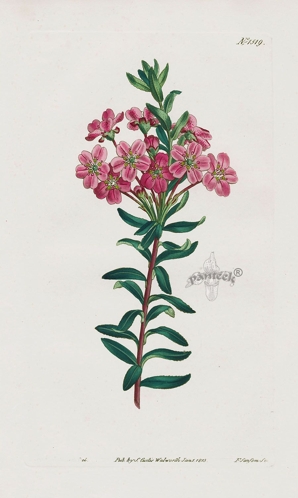
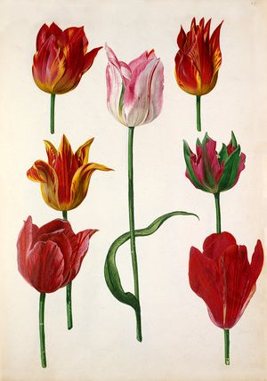
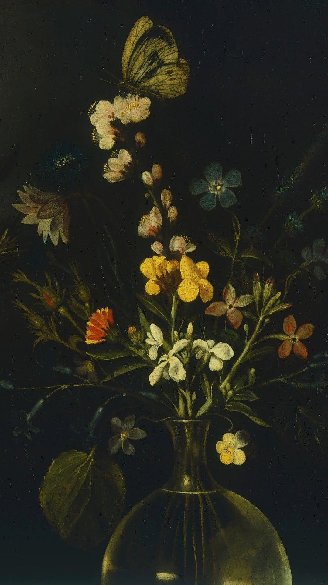
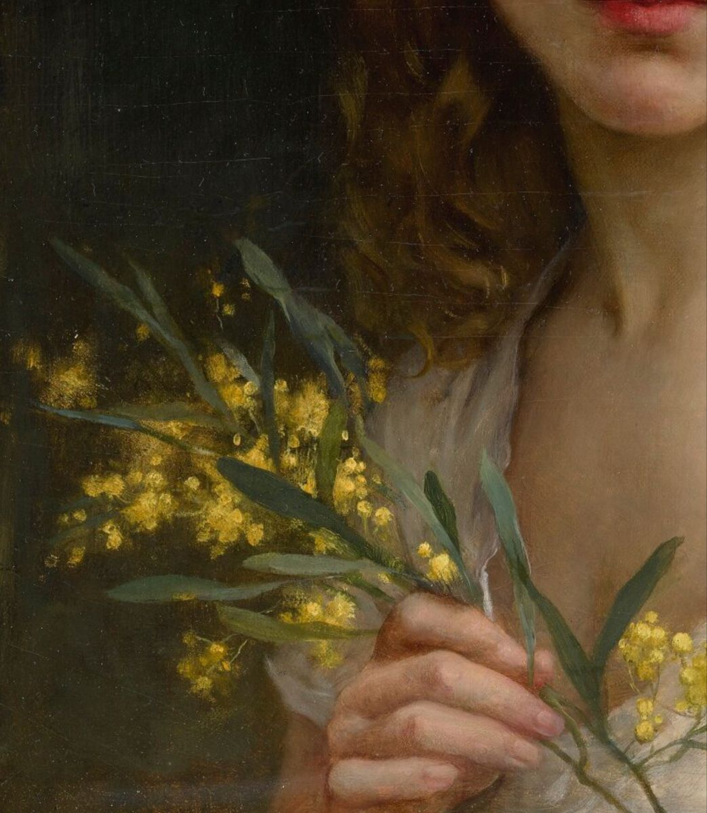

"Klasik Türk şiirinde isimleri bizzat zikredilmek suretiyle, geçen 28 çiçek şöyledir: gül (verd), nesrîn, nesteren; lâle, şakâyıku'n-nu'mân; sünbül; nergis, ('abher), zerrîn, zerrîn-kadeh; nevrûz; benefşe (menevşe); yâsemin (semen, yâsemen); sûsen; nilûfer (nîlû-per, nîlû-berg), çadır çiçeği; reyhân, fesleğen; karanfil (karanfül); za'ferân; şebbû (şebbûy); zanbak; buhûr-ı Meryem, bahûr-ı Meryem; leylâk; merzengûş (mercanköşk), sedâb, lisânü's-sevr."Her ne kadar sayı yirmi sekiz gibi görünse de aynı çiçeğin farklı isimlerini listeden çıkardığımızda elimizde on dokuz çiçek kalıyor.Kitap sanatlarında kullanıldığı halde klasik Türk şiirinde kullanılmamış çiçek türleri de şunlardır: Haşhaş, gül hatmi, çuha çiçeği, bahar açmış meyve ağacı, çiğdem, calendula, ağlayan gelin, hezaren, kadife çiçeği, açelya, nerengül (katmerli düğün çiçeği), Peygamber çiçeği, Hasekiküpesi, Kasımpatı, kardelen, sümbülbeter, çanta çiçeği, yalınkat.
"Klasik Türk şiirinde en çok dikkat çeken çiçek, tartışmasız güldür. Gülden sonra divan şairlerinin en çok kullandıkları çiçekse lâleydi. Sümbül, nergis, yasemin ve menekşe de klasik Türk şiirinde oldukça sık kullanılan çiçeklerdendi. Kullanıldıkları beyitlerin sayıları açısından dördüncü grubu; reyhân, sûsen, erguvân, karanfil, nilüfer, şebboy, za'ferân/ safran ve zambak oluşturuyor. Buhurımeryem, leylâk ve mercanköşk gibi çiçeklerin geçtiği beyitler ise istisna derecesinde az.
Klasik şiirde gül, daha çok sevgiliyle birlikte düşünülmüş; aynı zamanda peygamber efendimizin göstereni olarak şiire konu edilmişti.Gülün kokusunu Resûl-i Ekrem'in terinden aldığına inanılır. Halk arasında, 'Gül koklamak sevaptır' sözü de daha çok bu çiçeğin Hz. Peygamber'in sembolü olmasından kaynaklanıyor .Gül aynı zamanda, sevgilinin yanağı, yüzü, dudağı; kimi zaman şarap ve kadeh olarak da beyitlerde kullanıldı. Bunun nedeni gülün renk, şekil ve koku açısından sevgilinin mezkûr uzuvlarına teşbih edilmesi. Şekil itibariyle yüz, renk itibariyle yanak ve dudak ile müşabehet ilişkisi içinde olan gül, şekil bakımından kadeh, koku ve renk açısından da şarapla ilişki içinde düşünülmeye müsaitti.Gülün yukarıda zikredilen estetik hususiyetlerinin yanı sıra şairlerce kabul görmesinin bir diğer nedeni de gül-bülbül ilişkisi içinde ve âşığın göstereni bülbüle karşılık sevgilinin göstereni olarak kullanılması. Bu da gülün klasik Türk şiiri estetiğinin en önemli iki unsurunu yani âşık ve maşuku açıklamakta ve anlatmakta önemli bir görev icra ettiğinin göstergesiydi. Klasik Türk şiiri estetiği içinde gül, heyet olarak maşukun benzetilmesi vazifesini ifa ediyor. Gülün boyu ile sevgilinin boyu, gülün rengi ile sevgilinin yüzü ve yanakları, gülün nazlı yapısıyla sevgilinin nazı, gül-i ra'na ile sevgilinin hem âşık hem de rakibe yüz veren mizacı, bahar mevsiminde gülün açılmasıyla sevgilinin baharda gezintiye çıkması, gülün üzerindeki çiğ tanesiyle sevgilinin kulağındaki küpe, gülün dikeniyle rakip, gülün yapraklarının kat kat oluşuyla kulak arasındaki ilişki, gülle ilgili önemli estetik hususiyetler olarak dikkat çeker.
Klasik Türk şiirinde ilk zamanlarda taşralı bir çiçek addedilen lâle, estetik bir unsur olarak kabul gördükten sonra en çok kullanılan çiçeklerden biri oldu."Gülden sonra klasik Türk şiirinde en sık rastlanan çiçek lâledir.Ayrıca ilişkilendirildiği şahıslar arasında 'sevgili ve güzel', uzuvlar arasında 'yanak ve dudak', eşyalar arasında 'kadeh ve şarap', doğal ve kozmik öğeler arasında 'güneş, ay ve ateş', soyut kavramlar arasında da başta şiirsel terimler olmak üzere olumlu anlam ve çağrışım ifade edenler daha çok dikkat çekiyor. Lâlenin klasik Türk şiirinde kolayca benimsenmesi ve sıkça kullanılmasının sebeplerinden birisi de lâle kelimesinin ve Allah lafzının aynı harflerle yazılmasıdır.
Klasik Türk şiirinde yaseminle birlikte "uzuvlar arasından saç, zülüf, yanak ve sinenin; eşya arasından elbise, altın ve gümüşün; şahıslar arasından da sevgili ve güzelin daha çok dikkat çektiği anlaşılıyor.
Siyah rengi ve kokusu dolayısıyla sevgilinin saçı, zülfü, kâkülü ve yanağındaki ayva tüyüne benzetilen çiçeklerin sayısı çoktur. Bunlardan biri de reyhândır. Burada da teşbih ilişkisi esnasında enk ve koku işlevlerinin ön planda olduğu göze çarpar.
Diğer çiçekler kadar sık kullanılmasa da şekil ve renk açısından şairlere değişik ilhamlar veren bir çiçek de erguvandır. Erguvanın "şarap, kan, kanlı gözyaşı ve sevgilinin yanağı gibi birbirinden değişik tasavvura malzeme olduğu tespit edildi.Yine bu bitkisel özelliğinden ilhamla ilişkilendirildiği kadeh, yaş, kan, ateş, dudak, yüz, yanak, yara, yara izi, dil, boy, vücûd, sevgili ve âşık gibi öğeler erguvânın anlam çerçevesini tamamlıyor.Erguvan estetik hususiyetinden çok rengi ile ön plana çıkan bir çiçek.
Karanfil, klasik Türk şiirinde az kullanılmakla beraber, birbirinden çok farklı öğelere benzetilmesiyle dikkat çeker. Diğer taraftan karanfilin anlam çerçevesini; yara (zahm) ve ben (hâl) ile yüz, yanak, boy, göz, çene (zenahdân), zülf, güzel, gelin ('arûs), sevgili, âşık, âbdâl, âbid, kuş ve yıldızlar (encüm) gibi değişik öğeler oluşturur. Karanfilin de erguvan gibi daha çok öne çıkan özelliği rengi yani kırmızılığıdır. İçinde kullanıldığı beyitlerde ya doğrudan ya da dolaylı olarak kırmızılık, çoğunlukla da âşığın kanı veya kanlı gözyaşı ilgisi bulunuyor.
Geceleri açması ve güzel kokması açısından dikkat çekmiş ve bu sebeple en çok sevgilinin zülfü ve saçlarıyla ilişkilendirilmişti. Ayrıca 'hâl, göz, sûfî ve hırsız' olarak algılanmasında da bu özelliğinin etkili olduğu anlaşılıyor. Bu çiçek, geceleri açtığı için herhangi bir özelliğiyle karanlığı, geceyi, gizliliği çağrıştıran öğelerle birlikte düşünülmüş. Gece kokusu anlamına da gelen şebbûy kelimesi siyah olan sevgilinin saçlarına, benine, gözüne; geceleri eve girdikleri için hırsıza ve sırrını ifşa etmedikleri için bir nevi gizli iş gördükleri için de sûfîlere benzetilmişti.
Diğer çiçeklerin aksine sonbaharda açar ve sarı renk elde etmede kullanılır. Bu yönüyle daha çok âşığın yüzüyle (çehre, sîmâ, beniz, yanak) ilişkilendirilmişti. Yukarıda, erguvan maddesinde aktardığımız beyitte de görüldüğü gibi âşığın yüzü safran rengindeymiş gibi tasavvur edilir.
Sayfa Sonu